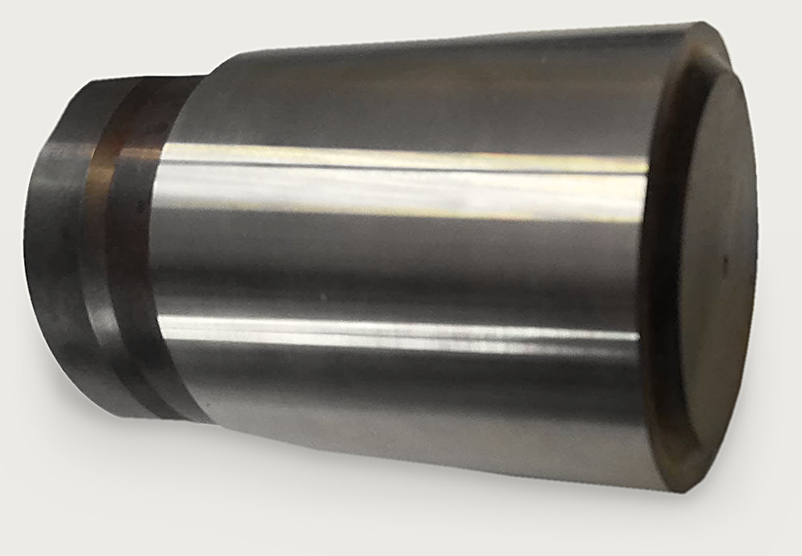
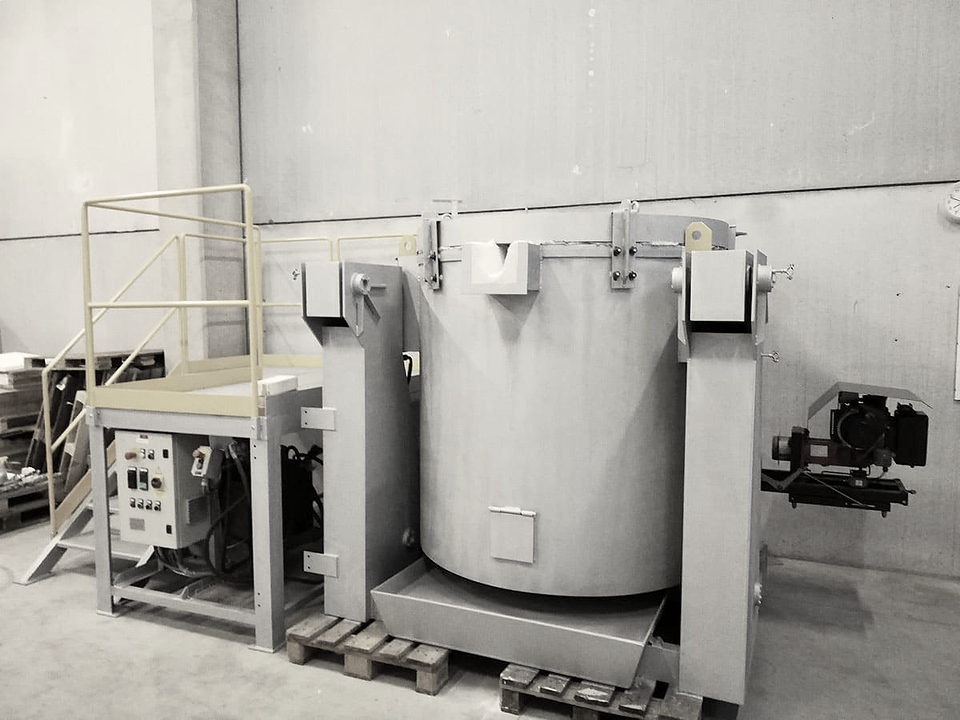
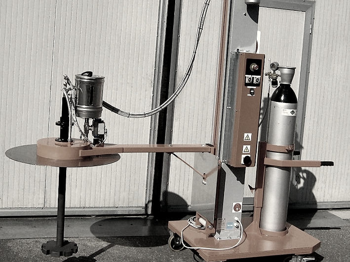
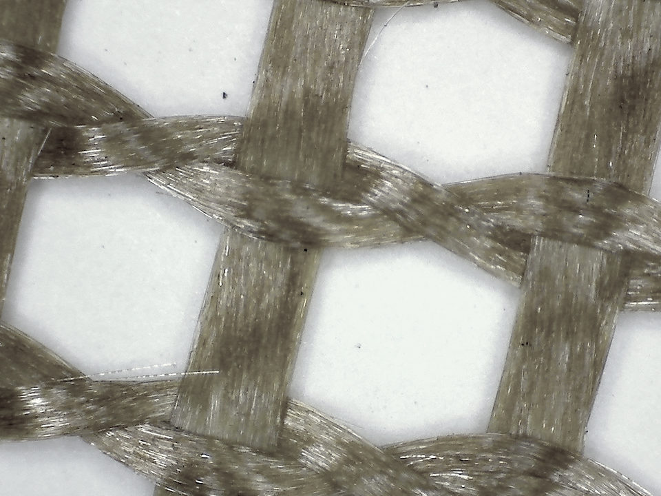
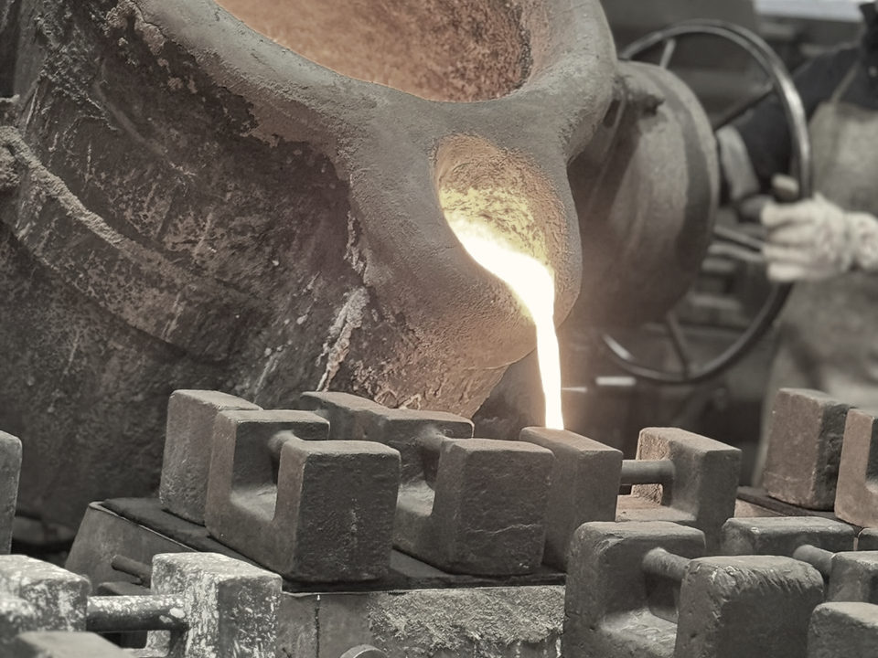
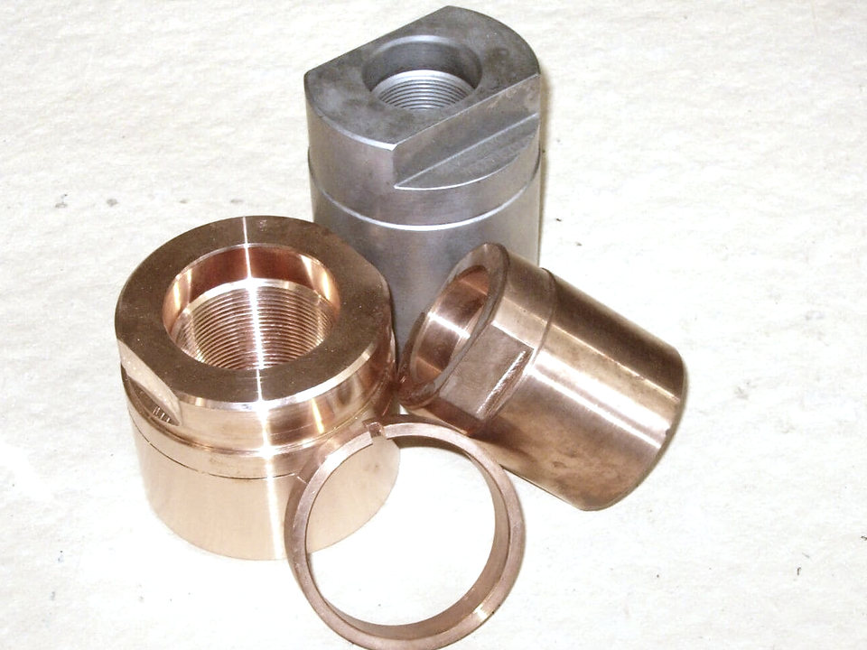
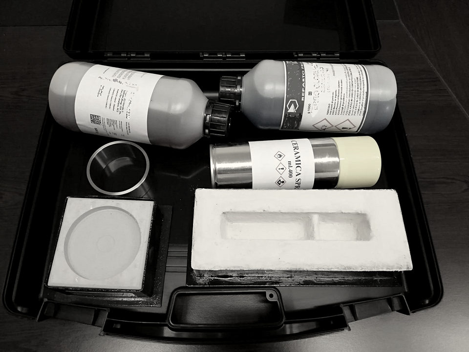
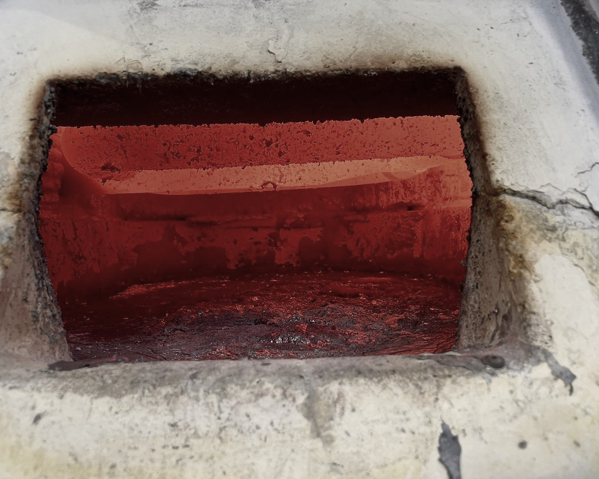
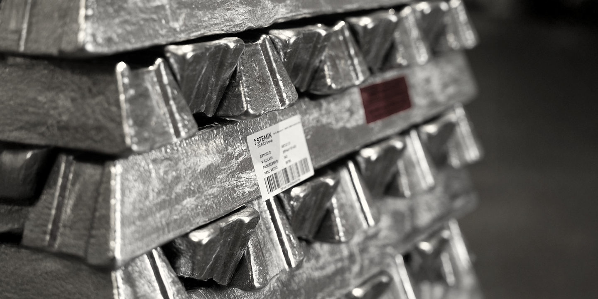
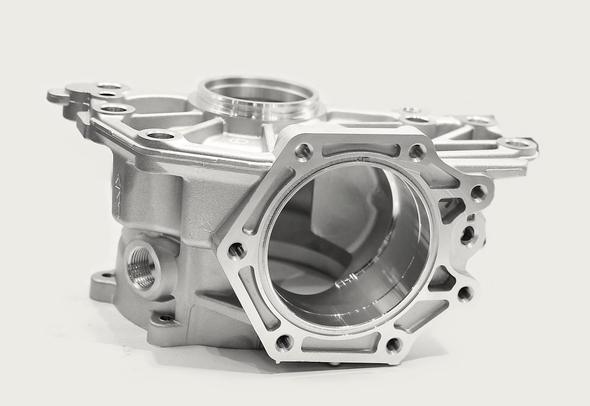

Metalli non ferrosi

Impianti e prodotti per fonderie di alluminio, zinco e rame, dal crogiolo al pistone d'iniezione. A Mestrino, dal 1990.
Chiama +39 348 604 6875ProdottiDal forno al getto
Dal 1990 Progecom porta in fonderia quello che il metallo liquido tocca: il crogiolo, il rotore, la rete, la siviera, il pistone.

Fusione
Forni, crogioli, refrattari e le leghe da fondere. Il crogiolo Long-Life ISO ha la tasca pirometrica fino al 60% della profondità.

Degasaggio
Degasaggio dell'alluminio con rotore a effetto pompa: diametro 250 mm, altezza 80 mm, albero e rotore fino a 2000 cicli.

Filtrazione
Rete con maglia 1,0x1,0, 1,5x1,5, 2,0x2,0 e 2,5x2,5 mm, in rotoli da 1x100 m. Filtri in schiuma ceramica fino a 850 °C.

Trasporto
Dal forno alla macchina: la siviera ribaltabile MP porta 400 o 600 kg di alluminio.

Iniezione
Pistoni in CuCo2Be, CuNiSiCr o acciaio indurito fino a 420 HB, dal diametro 50 al 180 mm, con filetto tradizionale o attacco a baionetta. Certificati di analisi del materiale su richiesta.

Controllo
Bilancia di precisione, microscopio USB, pompa sottovuoto per l'idrogeno, pirometri, termocoppie, termoanalisi e liquidi penetranti. Con il corso di formazione.

AssistenzaAnche nel week-end
Manutenzione e pulizia periodica dei forni anche il sabato e la domenica, così la produzione della settimana non rallenta.
- Il magazzino lo teniamo noi. La fonderia non sostiene il costo di gestione di un magazzino proprio.
- Prima e dopo la vendita. Supporto tecnico e commerciale dalla fase iniziale al post vendita, con strutture e tecnici esterni di lunga esperienza.
- Carte in regola. Certificati di analisi del materiale su richiesta, corso di formazione per gli strumenti di controllo.

Rappresentanze
Progecom rappresenta STEMIN S.p.A.: recupero dei rottami non ferrosi e leghe di alluminio secondario e semi-primario. La rappresentanza
Cerco, vendo, usatoForni usati, con il prezzo
Forni, siviere e impianti di seconda mano, ciascuno con il prezzo e il costo del nuovo. Tre esempi dall'elenco pubblicato.
| Impianto | Capacità | Prezzo | Costo del nuovo |
|---|---|---|---|
| Forno Marconi gas fusorio a torrerovesciabile sul becco, usato circa 6 mesi | bacino 2000 kg, fusione 1000 kg/h | € 70.000 | circa € 250.000 |
| Forno fusione e attesa Fergalusato circa 30 giorni lavorativi, venduto con garanzia | bacino 1500 kg, 500 kg/h | € 78.000 | |
| Siviera rovesciabile sul beccopistoni oleodinamici comandati dal muletto | 250-300 kg di alluminio | € 3.500 | circa € 12.000 |
Ordini evasi in tempi molto brevi, in tutta Italia
+39 348 604 6875info@progecom-poggese.it
commerciale@
Via Udine 24, 35035 Mestrino (PD)
Apri la mappa
